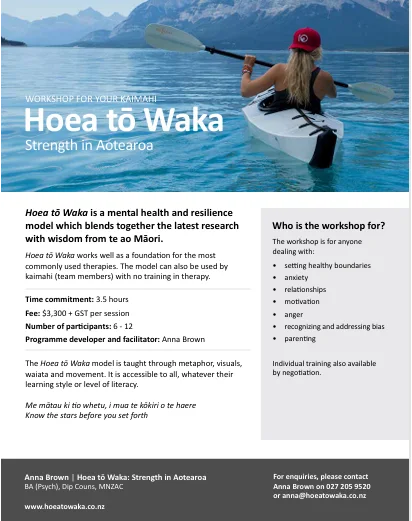

Notice needs before overwhelm
Build awareness of energy, stress, self-care, and the choices available during pressure.
For organisations and teams
A practical, tailored workshop that helps people find direction, protect their wellbeing, and understand each other better during challenging times.
What the workshop supports
For organisations that want a more compassionate, connected workplace—and practical tools staff can use beyond the session.
Build awareness of energy, stress, self-care, and the choices available during pressure.
Help people identify what matters, create meaningful goals, and find greater clarity in their role.
Develop a shared language for behaviour, experience, social context, and more constructive support.

Tailored to the room
Every workplace has different pressures. Before delivery, Anna works with you to understand the audience, the challenges they face, and the language that will make the training useful.
A simple pathway
Tell Anna who the workshop is for and what your organisation is navigating.
Agree on the most useful outcomes, examples, and areas of emphasis.
Participants learn the model interactively and leave with practical resources to keep using it.
A short conversation is enough to begin shaping the right format and focus.